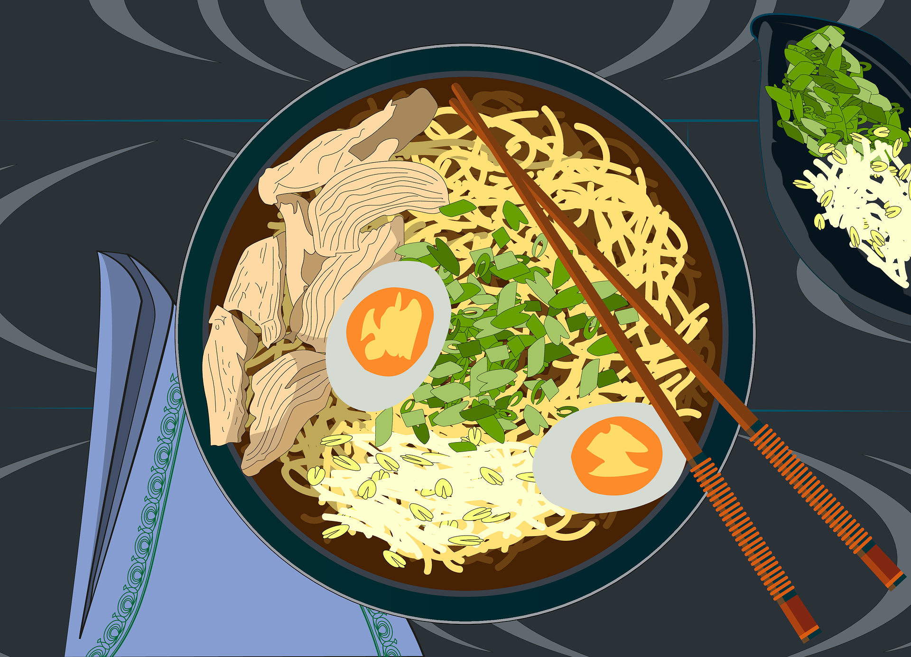

Home About us Gallery Contact
Chicken Stir-Fry with Ramen

Description:
Stir-fried ramen with chicken or your choice of protein.
I find using chopsticksmakes the cooking process super easy.
Ingredients:
- 1 (3 ounce) package ramen noodles with seasoning packet
- 2 tablespoons sesame oil, divided
- 8 ounces skinless, boneless chicken breast, diced
- 2 tablespoons oyster sauce
- 2 tablespoons soy sauce, divided
- 1 ½ cups frozen mixed vegetables
- 2 teaspoons freshly grated ginger
- 2 teaspoons minced garlic, divided
- ½ teaspoon chili powder
Steps
- Place ramen noodles in a bowl. Set seasoning packet aside. Pour boiling water
over noodles until they are submerged; set aside while you start the stir-fry.
- Heat 1 tablespoon sesame oil in a frying pan over medium-high heat, swirling
to coat the entire pan. Add chicken and stir to coat with oil. Add oyster sauce
and 1 tablespoon soy sauce. Stir-fry chicken until no longer pink and juices run clear, 7 to 10 minutes.
- Add frozen vegetables. Cover, reduce heat to medium, and let steam until
heated through and soft, about 5 minutes. Add ginger and 1 teaspoon minced garlic;
stir-fry until fragrant, about 1 minute. Transfer mixture to a serving bowl.
- Drain softened ramen noodles, reserving 2 tablespoons soaking water.
- Heat remaining sesame oil in a pan over medium heat. Add reserved soaking water
along with 1/2 of the ramen seasoning packet, remaining soy sauce, remaining garlic, and chili powder.
Add ramen noodles; cook and stir constantly until coated and water has evaporated, 2 to 3 minutes.
- Transfer to serving bowls and top with chicken and vegetable mixture.
All recipes are sourced from this website: Allrecipes